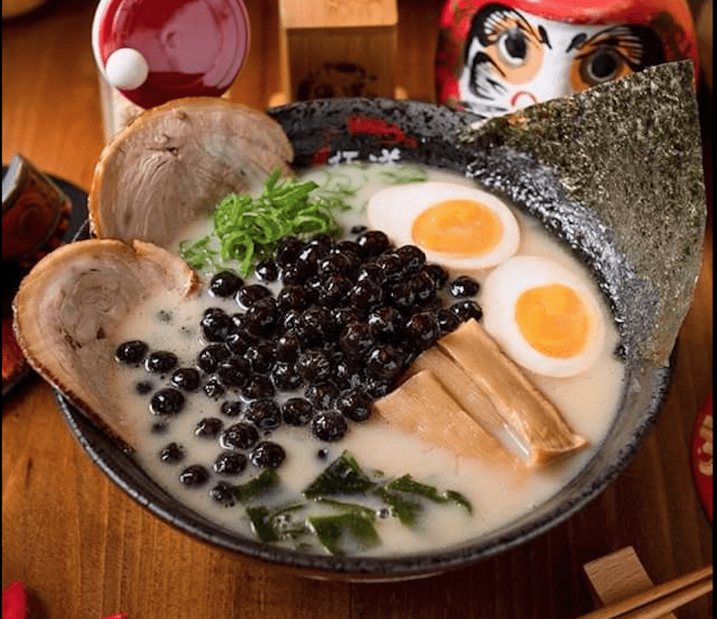

◉ Globalization of Bubble Tea ◉The globalization of bubble tea began with the Taiwanese diaspora. As Taiwanese people moved abroad for various reasons, they brought their culinary traditions with them, including bubble tea. Taiwanese expatriates opened bubble tea shops in their new countries, introducing the drink to their local communities.
The first step in globalization often involved introducing bubble tea to other Asian countries. Neighboring countries such as Hong Kong, China, Singapore, and Japan. were among the first to adopt bubble tea as a popular beverage. Local adaptations and variations emerged in these markets, catering to regional tastes. Specifically in Japan, innovative flavors, toppings, and presentations created another uprising that started another bubble tea trend in Taiwan.
The name 波霸/boba came from an advertising method by a Hong Kong bubble tea store owner. Before the name was known as the tasty tapioca pearls, “boba” was a colloquial slang term that refers to large breasts. The character "波" (bo) means "waves" or "rippling," and "霸" (ba) can imply something dominant or big. Together, these characters are used metaphorically to describe the shape or size of breasts. Thus, it's important to note that while the term "波霸 boba" is primarily used in informal contexts, it can also be considered disrespectful or objectifying when applied to individuals!
As international chains expanded, bubble tea shops emerged in countries across Asia, Europe, North America, and beyond. Social media further fueled its popularity, turning bubble tea into a global icon, a symbol of cultural exchange, and a testament to the interconnectedness of global food and drink culture.
Outside of Taiwan, bubble tea has inspired various inventive adaptations and cultural influences worldwide. In the United States, where innovation is prevalent, there has been a surge in unique bubble tea offerings, including alcoholic bubble tea cocktails in trendy bars and bubble tea-infused desserts like bubble waffles and ice cream. In the United Kingdom, bubble tea shops have incorporated British tea traditions into their menu, blending bubble tea flavors with classic English teas. In Australia, a health-conscious society, bubble tea outlets have introduced "light" versions of the drink, featuring reduced sugar options and fresh fruit infusions.
Southeast Asia has seen the rise of bubble tea-themed cafes and merchandising, with countries like Indonesia, Malaysia, and Singapore leading the trend. These cafes offer immersive bubble tea experiences, from bubble tea-flavored cakes to merchandise like plush boba-themed toys. Japan, known for its quirky inventions, has experimented with bubble tea in unique ways, such as bubble tea-flavored candies, bubble tea-flavored chewing gum, and even bubble tea-inspired beauty products. On the weirder side, there is also boba rice and boba ramen. Japanese vending machines, famous for their diversity, now offer a range of innovative bubble tea flavors, dispensed directly into a cup with the option to adjust sweetness and ice levels.
